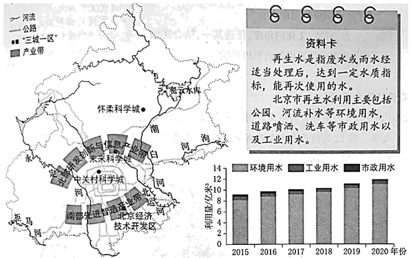
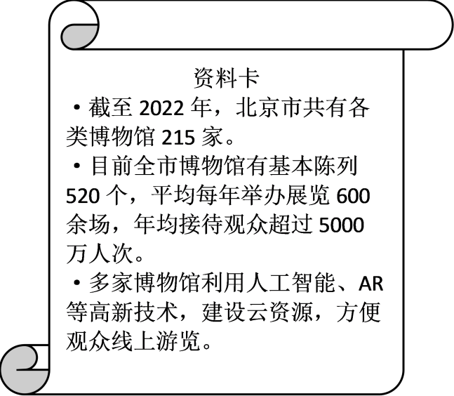

2023年北京中考地理 第26题 解析
26. 北京是著名古都和历史文化名城，也是现代化大都市。围绕新时代北京建设新成就，同学们开展学习交流。左图为北京市简图。右图为2015-2020年北京市再生水利用量统计图。阅读图文资料，回答下列问题。

主题一生态之城
北京市水资源短缺，部分河段曾经干涸、污染严重。经过综合治理，多条河流实现全线水流贯通入海，水清岸绿，其中再生水功不可没。
（1）图中，北京市主要河流有____河、潮白河、北运河、拒马河、泃河等。
（2）自2015年以来，北京市再生水利用量呈现____趋势，其中，利用量最多的是____用水。再生水已经成为北京市供水的重要来源。
主题二科技之城
北京是国家高新技术产业的高地，以“三城一区”为主平台打造两大产业带，发挥科技示范引领作用。
（3）“三城一区”与两大产业带相互支撑，共同发展。北京市主要依托____,打造北部研发创新与信息产业带；主要依托____打造南部先进智造产业带。（将数字序号填写在对应的横线上）
①北京经济技术开发区②中关村科学城、未来科学城、怀柔科学城
（4）建设“三城一区，加快推进高新技术产业发展，这最能体现出北京是全国的（ ）（单项选择）
A. 政治中心B. 文化中心C. 科技创新中心D. 国际交往中心
主题三文化之城
博物馆以征集、保护、研究、传播并展出具有代表性的物质及非物质文化遗产为主要形式，为公众提供知识、教育和学习机会。北京市政府制定规划，积极推进“博物馆之城”建设。

（5）依据资料，概括北京市建设“博物馆之城”的有利条件。
（6）从生态科技、文化的角度，任选其一，结合实例，说出北京建设新成就的积极影响。
【答案】（1）永定 （2） ①. 上升 ②. 环境
（3） ①. ② ②. ① （4）C
（5）博物馆数量多，基础设施完善、年接待能力强，技术先进，方便线上游览等
（6）生态科技方面：生态之城，北京经过综合治理，多条河流实现全线水流贯通入海，水清岸绿；“三城一区”与两大产业带相互支撑，共同发展；多家博物馆利用人工智能、AR等高新技术，建设云资源，方便观众线上游览，有利于为公众提供知识、教育和学习的机会，同时节约资源；文化方面：博物馆以征集、保护、研究、传播并展出具有代表性的物质及非物质文化遗产为主要形式，北京“博物馆之城”的建设促进了文化的传播等。
【解析】
【分析】本题以北京为材料，设置六道小题。涉及北京的生态：河流及用水情况；科技之城：三城一区的建设；文化之城：“博物馆之城”的有利条件等知识点，考查学生对相关知识的掌握能力。
【小问1详解】
由图可知，北京市主要河流有永定河（西部）、潮白河、北运河、拒马河、泃河等。
【小问2详解】
由2015-2020年北京市再生水利用量统计图可知，自2015年以来，北京市再生水利用量呈现逐年上升的趋势，其中，利用量最多的是环境用水（公园、河流补水等）。由资料卡可知，再生水已经成为北京市供水的重要来源。
【小问3详解】
“三城一区”与两大产业带相互支撑，共同发展。北京是国家高新技术产业的高地，以“三城一区”为主平台打造两大产业带，发挥科技示范引领作用。由北京简图可知，北京市主要依托北部的②中关村科学城、未来科学城、怀柔科学城，打造北部研发创新与信息产业带；主要依托南部的①北京经济技术开发，打造南部先进智造产业带。
【小问4详解】
建设“三城一区，加快推进高新技术产业发展，这最能体现出北京是全国的科技创新中心这一职能，C符合题意；政治中心、 文化中心、 国际交往中心体现不明显，排除ABD。故选C。
【小问5详解】
由资料卡可归纳：北京的博物馆数量多（215家），基础设施完善、年接待能力强（基本陈列520个，平均每年举办展览600万人次，年均接待观众超过5000万人次），技术先进、方便线上游览（利用人工智能、AR等高新技术）等。
【小问6详解】
本题可从三个主题入手，依次体现了生态、科技和文化方面对北京城市建设的积极影响。生态科技方面：生态之城，北京经过综合治理，多条河流实现全线水流贯通入海，水清岸绿；“三城一区”与两大产业带相互支撑，共同发展；多家博物馆利用人工智能、AR等高新技术，建设云资源，方便观众线上游览，有利于为公众提供知识、教育和学习的机会，同时节约资源；文化方面：博物馆以征集、保护、研究、传播并展出具有代表性的物质及非物质文化遗产为主要形式，北京“博物馆之城”的建设促进了文化的传播等。
秦晋转型发展